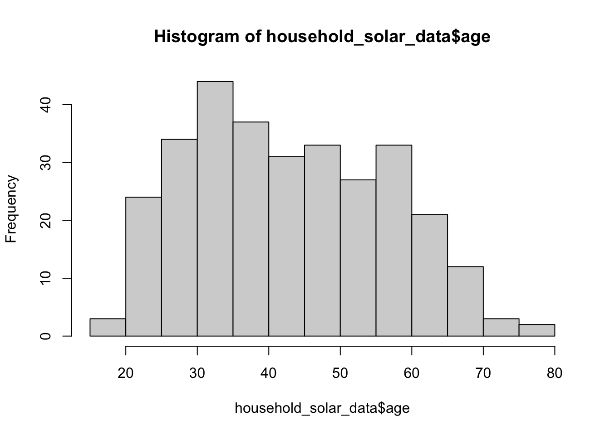

Lab 04: Describe Your Data
Feb 1, 2022
1. การคำนวณความแปรปรวน (variance)
การคำนวณค่าความแปรปรวนใน R นั้นทำได้ง่าย ๆ ด้วยคำสั่ง var()
อย่างไรก็ดีวัตถุประสงค์ของแบบฝึกหัดนี้ คือ
แสดงให้เห็นถึงขั้นตอนในการคำนวณค่าความแปรปรวนไปทีละขั้นด้วยคำสั่ง R
สมมติว่า เราเปิดร้านอาหารและเก็บข้อมูลการสั่งโอเลี้ยงของลูกค้าแต่ละโต๊ะ
| โต๊ะ | | จำนว นแก้ว |
|---|---|
| A | 2 |
| B | 4 |
| C | 3 |
| D | 1 |
| E | 1 |
| F | 2 |
| G | 1 |
เราจะเริ่มต้นด้วยการสร้างตัวแปร (variable) ชื่อ drinks
เพื่อบันทึกข้อมูลจำนวนแก้วโอเลี้ยงจากแต่ละโต๊ะ
drinks <- c(2, 4, 3, 1, 1, 2, 1)
drinks## [1] 2 4 3 1 1 2 1เราต้องการคำนวณค่าการกระจายตัวของการสั่งโอเลี้ยง โดยใช้ค่าความแปรปรวน (variance) ซึ่งมีสูตรคำนวณคือ \[s^2 = \frac{\sum{(X - \bar{X})^2}}{N -1}\]
ในสมการนี้เรารู้ว่า
ค่า \(X\) คือ ค่าของข้อมูลแต่ละตัว
ค่า \(N\) คือ ค่าจำนวนกลุ่มตัวอย่าง
เราใช้คำสั่ง length() เพื่อหาจำนวนตัวอย่างในตัวแปร
n <- length(drinks)
n## [1] 7จึงเหลือค่า \(\bar{X}\)
ที่ต้องคำนวณด้วยคำสั่ง mean()
mean_drinks <- mean(drinks)
mean_drinks## [1] 2การคำนวณการกระจายตัว คือ การหาว่าข้อมูลแต่ละตัวเบี่ยงเบนในจากค่ากลาง (ค่าเฉลี่ย)
มากน้อยเพียงใด (deviation scores) เราจะนำค่าข้อมูลแต่ละตัวใน drink
ไปลบด้วยค่าเฉลี่ยที่คำนวณได้ จากนั้นบันทึกลงในตัวแปรชื่อ
deviation_drinks
deviation_drinks <- drinks - mean_drinks
deviation_drinks## [1] 0 2 1 -1 -1 0 -1ค่าความเบี่ยงเบนแบบนี้จะประกอบไปด้วยค่าที่สูงกว่าค่าเฉลี่ย (ติดบวก) หรือค่าที่ต่ำกว่าค่าเฉลี่ย (ติดลบ) และเมื่อรวมกันได้จะได้ 0 ซึ่งไม่สามารถนำไปใช้คำนวณอะไรต่อได้
sum(deviation_drinks)## [1] 0เพื่อให้ได้ ขนาด (magnitude) ของความเบี่ยงเบนที่ไม่ติดลบ จึงนำค่าเบี่ยงเบนนี้ไปยกกำลังสอง
sqr_dev <- deviation_drinks ^ 2
sqr_dev## [1] 0 4 1 1 1 0 1จากนั้นถึงหาผลรวม (sum) ตามสูตร \(\sum{(X -
\bar{X})^2}\)
ค่าผลรวมนี้เรียกว่า sum of squares (SS) หรือที่เรียกเต็ม ๆ ว่า sum of
squared deviations
sum(sqr_dev)## [1] 8จากนั้นนำไปหารด้วย degrees of freedom (\(N -
1\)) ซึ่งก็คือการคำนวณว่า โดยเฉลี่ยแล้วข้อมูลเบี่ยงเบนมากน้อยเพียงใด (mean of
squares; MS) หรือที่เรียกว่าค่าความแปรปรวน
sum(sqr_dev)/(n-1)## [1] 1.333333เนื่องจากเป็นค่าที่มีการคำนวณบ่อย R จึงมีคำสั่งเฉพาะสำหรับความแปรปรวน คือ
var() (สามารถทดสอบได้ว่าทั้งสองค่าเท่ากันด้วย ==)
var(drinks)## [1] 1.333333sum(sqr_dev)/(n-1) == var(drinks) #same value## [1] TRUEค่าส่วนเบี่ยงเบนมาตรฐาน (SD) ก็คือรากที่สองของ variance
คำสั่งรากที่สอง คือ sqrt()
sqrt(var(drinks))## [1] 1.154701R มีคำสั่งเฉพาะสำหรับส่วนเบี่ยงเบนมาตรฐาน คือ sd()
sd(drinks)## [1] 1.154701เทคนิคการเขียนโค้ด
เมื่อเราเริ่มชำนาญในการเรียกใช้คำสั่งต่าง ๆ แล้ว เราสามารถประหยัดบรรทัดการเขียนโค้ด
ด้วยการซ้อนคำสั่งต่าง ๆ เข้าด้วย เช่น sum((drinks-mean(drinks))^2)
จะได้ค่า sum of squares
หากต้องการซ้อนคำสั่งเพื่อคำนวณความแปรปรวนสามารถทำได้ดังนี้
sum((drinks-mean(drinks))^2)/(length(drinks)-1)## [1] 1.3333332. ค่าสถิติเชิงพรรณาจากข้อมูลตัวอย่าง
2.1 นำเข้าข้อมูลและตั้งค่า working directory
การนำเข้าด้วยโค้ด
เพื่อให้โค้ดทำงานง่ายที่สุด แนะนำให้ดาวน์โหลดไฟล์ข้อมูล (csv) นี้ลงใน working
directory (สามารถดู working directory ได้ด้วย getwd() )
หากไฟล์ R script ที่กำลังเปิดใช้งานอยู่ใน directory อื่น เราสามารถเปลี่ยน working directory ไปยัง folder ของไฟล์นั้นได้ โดยเลือกเมนู Session -> Set working directory -> To source file location (หรือใช้คำสั่ง R ด้านล่าง) และให้ save ไฟล์ข้อมูลไว้ใน folder เดียวกับ R script นั้น
getwd() #see current working directory
setwd(dirname(rstudioapi::getSourceEditorContext()$path)) #Use this code to set working directory to the source file locationเมื่อ set working directory เป็น folder ที่มีข้อมูลอยู่ เราจะสามารถโหลดข้อมูลเข้า
R ได้โดยเรียกชื่อไฟล์นั้นโดยตรง ด้วยคำสั่ง read.csv("path")
โดยให้บันทึกเป็น data frame ชื่อ solar_data
solar_data <- read.csv("RES_STAT_Lab4_Data.csv")
head(solar_data) #look at top 5 rows## X user deci sex age kno1 kno2 kno3 kno4 kno5 kno6 kno7 kno8 inno att1 att2 att3 att4 att5 att6 att7 att8
## 1 1 2 2 3 43 1 1 1 1 1 1 1 1 3 2 3 3 1 3 3 3 3
## 2 2 2 2 3 51 1 1 1 1 1 1 1 1 5 4 4 3 3 2 2 2 1
## 3 3 2 2 2 28 4 4 4 4 2 3 4 2 2 2 5 5 3 4 5 4 4
## 4 4 2 2 3 32 1 1 1 1 1 1 1 1 4 3 4 4 4 5 5 4 3
## 5 5 2 2 2 38 4 4 4 3 3 3 3 4 1 4 4 4 3 5 5 5 3
## 6 6 2 2 2 51 1 1 1 1 1 1 1 1 2 5 5 3 2 5 5 5 4
## interest
## 1 2
## 2 1
## 3 4
## 4 3
## 5 4
## 6 5การนำเข้าด้วยปุ่ม Import Dataset
เราสามารถนำเข้าข้อมูลโดยกดปุ่ม Import Dataset ที่อยู่ในหน้าต่าง Environment (ปกติอยู่ที่ช่องขวาบนของ RStudio) เลือก From Text (base)
ตั้งชื่อ variable เป็น solar_data
แล้วเลือกตัวเลือก Heading เป็น Yes สำหรับข้อมูลที่มีหัวตาราง

import dataset
คำอธิบายข้อมูล
user กลุ่มผู้ใช้ไฟฟ้า (nominal 5 กลุ่ม)
deci เป็นผู้มีอำนาจตัดสินใจว่าจะติดตั้งโซลาร์เซลล์หรือไม่ (nominal 5
ระดับ)
sex เพศของผู้ตอบ (nominal 3 ระดับ)
age อายุของผู้ตอบ (ratio scale)
kno1 ถึง kno8 ความรู้เกี่ยวกับเทคโนโลยีโซลาร์เซลล์
(ordinal 5 ระดับ)
inno ระดับการเปิดรับนวัตกรรม (ordinal 5 ระดับ)
att1 ถึง att8
เจตคติต่อการติดตั้งโซลาร์เซลล์เพื่อผลิตไฟฟ้าใช้เอง/ขาย (ordinal 5 ระดับ)
interest เจตนาที่จะติดตั้งโซลาร์เซลล์เพื่อผลิตไฟฟ้าใช้เอง/ขาย
(ordinal 5 ระดับ)
2.2 Data Cleaning
ตัวแปร user เป็นประเภทผู้ใช้ไฟฟ้า โดยค่า 1 และ 2 เป็นประเภทผู้ใช้ไฟฟ้าภาคครัวเรือน ส่วน 3-5 เป็นผู้ใช้ไฟฟ้าภาคธุรกิจ
เราใช้คำสั่ง table() เพื่อดูตารางความถี่ของ user
แต่ละประเภทได้
table(solar_data$user)##
## 1 2 3 4 5
## 82 222 50 13 17ในตัวอย่างนี้เราจะใช้เฉพาะข้อมูลภาคครัวเรือน ดังนั้นเราจะเลือกเฉพาะข้อมูลของ user = 1 หรือ 2 ออกมาเท่านั้น
โดยปกติแล้วข้อมูลประเภทนี้เป็นข้อมูลเชิงคุณภาพ และมักถูกบันทึกเป็นตัวอักษร (character strings) แต่ในกรณีนี้ ข้อมูลถูกเข้ารหัสเป็นตัวเลข (numeric) ดังนั้นเราจะให้ประโยชน์จากตรงนี้ในการเขียนสูตรเลือกกลุ่ม user 1-2 และคัด 3-5 ทิ้ง
เราจะเลือก data frame solar_data เฉพาะ “แถว” ที่ user เป็น 1
หรือ 2 (นั่นคือน้อยกว่า 3) และเลือกทุก “คอลัมน์” จากนั้นบันทึกเป็นตัวแปรใหม่ชื่อ
household_solar_data
household_solar_data <- solar_data[solar_data$user < 3, ]
table(household_solar_data$user)##
## 1 2
## 82 222การเปลี่ยนประเภทข้อมูลจัดประเภท (categorical) เป็น factor
ใช้คำสั่ง factor() เพื่อแปลง user เป็นตัวแปรประเภท factor
พร้อมกับใส่ label ให้เรียบร้อย ลำดับของ labels จะต้องเรียงตามลำดับของรหัสตัวแปร เช่น
2 = regular residence และ 1 = small residence
เนื่องจาก R จะติด labels โดยเรียงจากน้อยไปมาก เราจึงต้องใส่ลำดับในตัวเลือก labels โดยเอา small residence ขึ้นก่อน แล้วตามด้วย regular residence เพื่อให้ตรงกับ ค่า 1 และ 2
household_solar_data$user <- factor(household_solar_data$user, labels = c("small residence", "regular residence"))
table(household_solar_data$user) #always check your results##
## small residence regular residence
## 82 222str(household_solar_data$user) # see structure of the variable## Factor w/ 2 levels "small residence",..: 2 2 2 2 2 2 2 2 2 2 ...2.3 ข้อมูลจัดประเภท (Categorical Data)
Frequency table
เปลี่ยนตัวแปร sex ให้เป็น factor (1 = Not answer; 2 = male; 3 = female)
table(household_solar_data$sex) #before##
## 1 2 3
## 2 122 180household_solar_data$sex <- factor(household_solar_data$sex, labels = c("Not answer", "male", "female" ))
str(household_solar_data$sex)## Factor w/ 3 levels "Not answer","male",..: 3 3 2 3 2 2 3 2 3 2 ...การสร้างตารางความถี่ใช้คำสั่ง table() ซึ่งสามารถใช้ได้กับตัวแปร
numeric หรือ factor ก็ได้
แต่ถ้าหากใช้คำสั่ง summary() กับตัวแปร factor
ก็จะได้ผลเป็นตารางแจกแจงความถี่เช่นกัน
table(household_solar_data$sex)##
## Not answer male female
## 2 122 180summary(household_solar_data$sex)## Not answer male female
## 2 122 180Bar graph
แผนภูมิแท่งนิยมใช้เพื่อแสดงความถี่ของตัวแปร เราใช้คำสั่ง plot()
เพื่อสร้างกราฟ หากตัวแปรเป็น factor โปรแกรมจะเลือก bar graph ให้โดยอัตโนมัติ
plot(household_solar_data$sex)Contingency table
หากเราต้องการดูความถี่ของตัวแปรจัดประเภทตัวหนึ่งแบ่งตามตัวแปรอีกตัว เช่น
ความถี่ของเพศแบ่งตามประเภทผู้ใช้ไฟฟ้า เราสามารถสร้างตารางไขว้แบบ contingency
table โดยใช้คำสั่ง table(var1, var2)
table(household_solar_data$user, household_solar_data$sex)##
## Not answer male female
## small residence 0 28 54
## regular residence 2 94 1262.4 ข้อมูลเชิงตัวเลข (numerical data)
ค่าเฉลี่ย (mean; M)
ในการสรุปข้อมูลเชิงปริมาณ ค่ากลางของการกระจายตัวมักคำนวณโดยใช้ค่าเฉลี่ยเลขคณิต (mean) เช่น ค่าเฉลี่ยของอายุ
mean(household_solar_data$age)## [1] 43.64474ค่ากลางอีกตัวหนึ่งที่ได้รับผลกระทบจากคะแนนสุดโต่ง (outliers) หรือความเบ้ของข้อมูลน้อยกว่าคือ ค่ามัธยฐาน (median)
median(household_solar_data$age)## [1] 42หากเราใช้คำสั่ง summary() กับตัวแปรเชิงตัวเลข
เราจะได้ตารางสรุปค่าในจุดต่าง ๆ ของข้อมูลออกมา
summary(household_solar_data$age)## Min. 1st Qu. Median Mean 3rd Qu. Max.
## 19.00 32.00 42.00 43.64 54.25 80.00ส่วนเบี่ยงเบนมาตรฐาน (standard deviation; SD) และความแปรปรวน (variance)
ส่วนเบี่ยงเบนมาตรฐานและความแปรปรวนคำนวณได้โดยคำสั่ง sd() และ
var()
sd(household_solar_data$age)## [1] 13.62458var(household_solar_data$age)## [1] 185.6291ตารางสถิติเชิงพรรณา (Descriptive Stats Table) ด้วย psych package
คำสั่งมาตรฐานใน R ไม่มีคำสั่งเฉพาะในการสร้างตารางสถิติที่นิยมใช้กันในการรายงานผลการวิจัยทางจิตวิทยา จึงมีผู้เขียน package สำหรับการนี้โดยเฉพาะ
เริ่มต้นด้วยการติดตั้ง (install) package (ทำเพียงแค่ครั้งเดียว) และเรียกใช้ (library) package ใน session R (ต้องทำทุกครั้งที่เปิด R ขึ้นมาใหม่)
install.packages("psych") # You need to only do this once.
library(psych) # must do this everytime you restart R. เมื่อติดตั้งและเรียกใช้แล้ว เราจะใช้ทำสั่ง desribe ของ psych
package เพื่อสร้างตารางสถิติ
เราลองใช้คำสั่งนี้กับคอลัมน์ที่ 4 และ 5 (sex และ age)
psych::describe(household_solar_data[, 4:5])## vars n mean sd median trimmed mad min max range skew kurtosis se
## sex* 1 304 2.59 0.51 3 2.61 0.00 1 3 2 -0.50 -1.39 0.03
## age 2 304 43.64 13.62 42 43.16 16.31 19 80 61 0.27 -0.92 0.78สังเกตได้ว่า แม้ sex จะเป็นตัวแปรจัดประเภท คำสั่งก็พยายามจะคำนวณค่าให้ แต่มีเครื่องหมายดอกจัน (*) เตือนไว้ให้รู้ว่า ค่าสถิติเหล่านี้อาจไม่สามารถแปลความหมายได้ เนื่องจากค่าตัวเลขในตัวแปรจัดประเภทไม่ได้มีความหมายทางคณิตศาสตร์
ชื่อเต็มของค่าต่าง ๆ ในตารางสามารถดูได้ในหัวข้อ Value ของตัวช่วย
?describeHistogram และ Boxplot
Histrogram และ boxplot เป็นแผนภูมิที่เหมาะสำหรับแสดงการแจกแจงความถี่ (distribution) ของข้อมูลเชิงปริมาณ
hist(household_solar_data$age)
boxplot(household_solar_data$age)Copyright © 2022 Kris Ariyabuddhiphongs